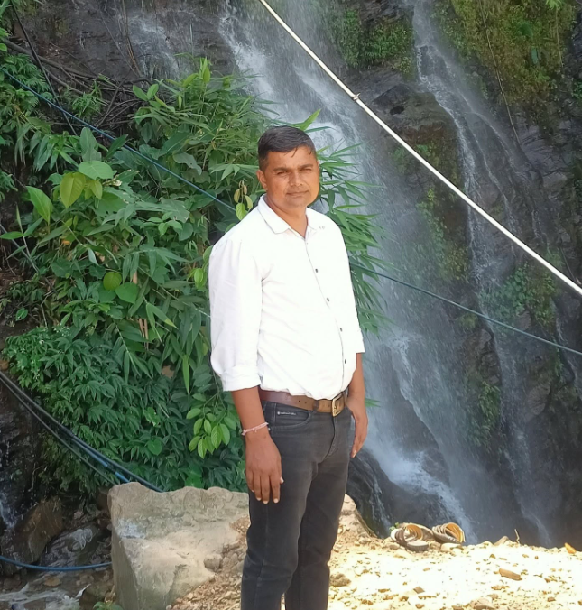

Shri Krishna Mahila Mahavidyalaya
Education, Confidence and Opportunity
Shri Krishna Mahila Mahavidyalaya, Dooni, works to provide better education and development opportunities for women students. We believe that empowered education strengthens society.
Discipline, hard work, and ethical values are given special importance at the college.
Our Commitment
To develop self-reliant, aware, and responsible citizens through knowledge and skills.
Our Vision
To give every student the opportunity to recognise her potential and turn it into success.

Leadership
Message from the Director
Prem YadavDirectorWelcome to Shri Krishna Mahila Mahavidyalaya. Our mission is to give every student quality education, strong values, and the confidence to build a successful future. We remain committed to supporting each student on her journey of learning and growth.
Compliance